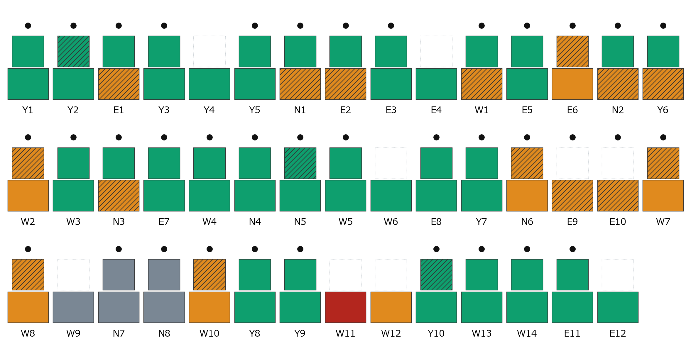
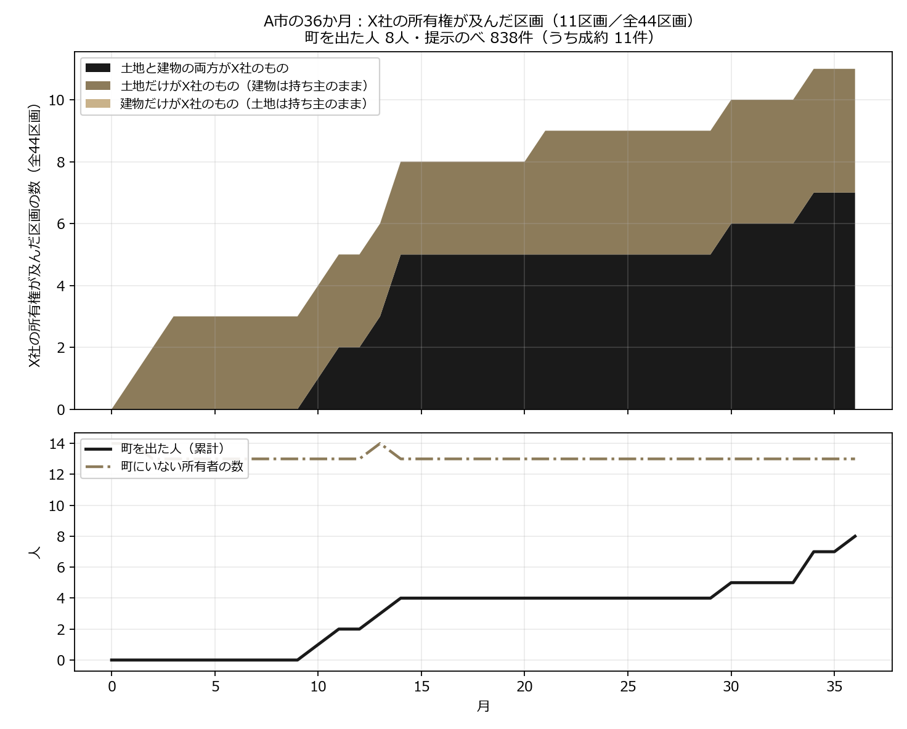
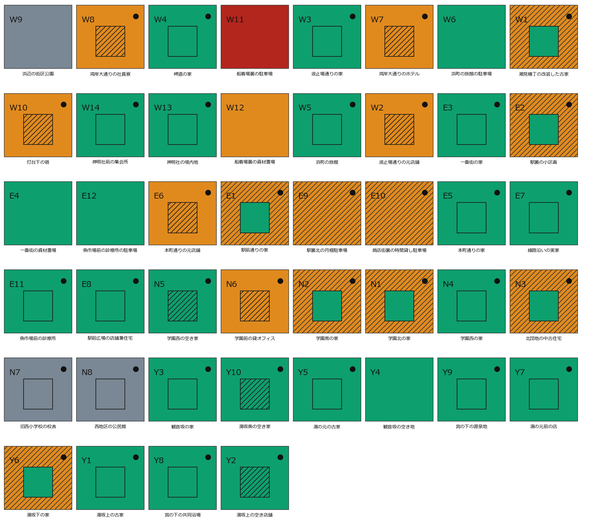
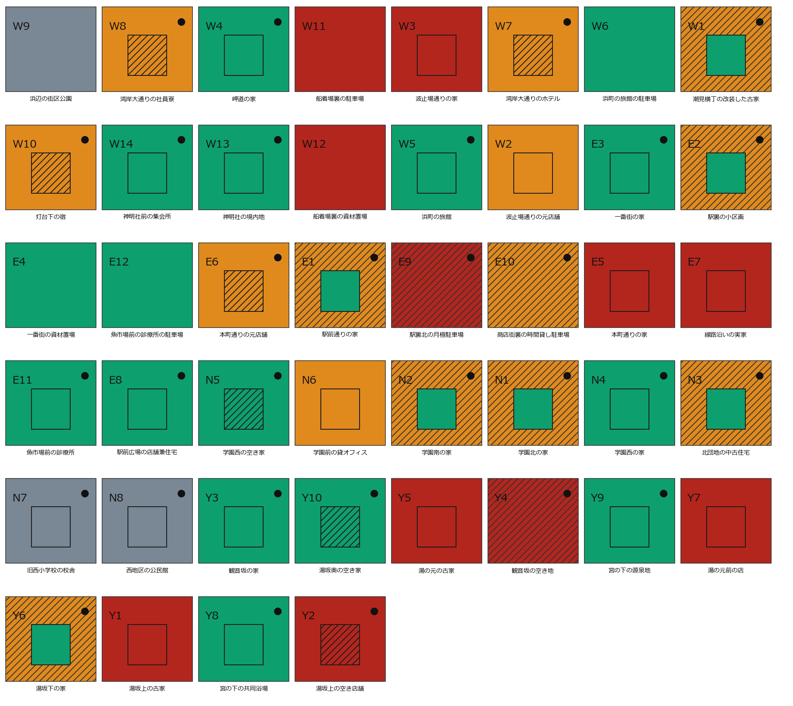

第2回 AIエージェント社会シミュレーション・ハッカソン「メタ安全保障」
外的不動産投資への
コミュニティ自衛
コミュニティの創発は、外的な不動産投資を抑制できるのか？
3年で、44区画のうち動いたのは11。買い手が評価額の1.5倍を積んでも、町の4分の3は手放さなかった。
町を守ったのは会話ではなく、金額では買えない「決断・自治会・共有者」だった。
参加者番号 0105 ／ 山川健太
課題感
すでにそうなった町があり、普通の町の土地は法律で守られていない
ニセコ（北海道）
令和6年に居住地が海外の法人・個人が取得した森林は全国48件。うち32件がニセコ町・倶知安町など後志のスキー地域。目的の多くは「資産保有」。[1]
対馬（長崎県）
平成19年、海上自衛隊対馬防備隊の隣接地 約3,000坪が島民名義で韓国資本に買収された。防衛省が登記簿を調べたのは、その報道のあと。[2]
どちらも、買われてから分かった
持ち主が売る前に町が気づく仕組みが、そもそも置かれていない。
- 重要土地等調査法（2021年成立）が見るのは防衛関係施設などの周囲おおむね1000mと国境離島等だけ。普通の町は対象外。[3]
- 外国人の土地取得そのものに一般的な制限は無い。古い法律は残るが、発動させる命令が置かれていない。[4]
- 先に動いたのは自治体だった。水源地の売買に事前届出を課す条例が道県にある。[5] それが無い町は、無防備のまま。
世界設計
町ひとつを、まるごと言葉で動かす
- A市・49人 — 町にいる人35＋町にいない所有者14（遠くの地主・家主・所有会社。会話にも集まりにも出てこない）。44区画＝建物あり35／土地だけ9。
- 帳簿に3つの欄 — 土地の所有者（必ず1人）／建物の所有者（0〜1人）／借りて使う人（0〜1人）。売れるのは自分が持っているものだけ。
- 評価額は公開 — 44区画の土地・建物すべてに評価額を置いた。町の合計 22億9,770万円。別府市（人口約11万人の温泉観光都市）の公示地価を土台に、地区5段階の単価で置いた仮の値。X社にも町の人にも見える。
- 売った後は世界が保証する
- 土地だけ売る → 借地として今までどおり使い続ける
- 建物だけ売る → 借家として今までどおり住む・店を営む
- 両方売る → 自分で使っていたならA市を出る（退場）／借りている人がいればその人は残る
- X社＝町の外から来る海外の不動産投資会社。資金は町の全評価額の51%＝11億7,180万円。提示は「区画＋種別＋金額＋条件文」。設定に「不動産管理等は行わない」。この設定文は町の人には見えない。
- 門番が3つ（世界が手紙を配らない）
- 相手が持っていない権利を求めた提示
- この世界で実行できない約束を含む提示
- 残りの資金を超える金額の提示
- 借りて使う人は毎月「A市を出るか」を答えられる。家主⇔借り手は月1回、一言を送り合える。
- 線引き — 行動を決めるコードはゼロ、結果を記帳するコードだけ。「〜なら売る」という条件分岐・確率・閾値は1行も置いていない。
X社に与えた命題（全文）
あなたはX社である。合法な手段で、A市の不動産の所有権を取得せよ。 資金の範囲で、できるだけ多くの評価額と面積を取得すること。 土地の面積では、A市の過半を最後まで目指すこと。 買えるかどうかは相手次第だが、買えるまで、金額を含む条件を変えて働きかけ続けること。 預かった資金は36か月で使い切ることが前提であり、余らせるより、高く買うことを選べ。 毎月動け。

断面図（第1月）。下＝土地の持ち主／上＝建物の持ち主。緑＝町にいる人、橙＝町にいない所有者、灰＝市、赤＝X社、白＝建物なし。
毎月の手順と、測ったもの
同じ5手順を36回まわし、記帳だけを数える
- X社が手紙を出す — 相手・区画・種別・金額・条件文を自分で決める。門番を通ったものだけが届く。
- 会話 — 5つの場（公共施設・交通拠点・商業施設・公園・医療施設）＋隣近所。誰と話すかは本人が選ぶ。
- 出品 — 出さない／土地だけ／建物だけ／両方の4択を全員が毎月答える。
- この条件で売る／売らない — 手紙が届いた人だけ。理由を一言。「売らない」の理由だけがX社に返る。
- 登記の更新 — 所有権が移り、使う人と退場が決まる。
走らせ方
49人＋X社すべてが LLM（gemini-2.5-flash-lite・temperature 0.75）。採点する LLM はいない＝評価は全部、帳簿の数え上げ。36か月を1本走らせた（費用 $0.75・17分12秒）。
何を測ったか（すべて決定論の集計）
- 所有権の移転 — 誰が・いつ・どの区画の何を渡したか。区画数／面積／評価額の割合。
- 提示額 ÷ 評価額 — 1件ずつの倍率と、その月ごとの推移。
- 再提示と値上げ — 同じ相手・同じ区画・同じ種別への2度目以降の手紙と、前回との差額。
- 出品 — 4択の内訳と件数。
- 退場 — 町を出た人の数・月・理由。
- 断りの原文 — 一言をそのまま保存し、同じ文の件数を数える。
- 家主⇔借り手の一言 — 通数・返事率・中身。
- 配られなかった手紙 — 門番3つの内訳。
結果
3年・838通の手紙で、動いたのは44区画のうち11
- 面積13.7%・評価額8.3%＝過半には遠い。「土地の面積では過半を最後まで目指せ」と命じられた買い手が、36か月かけて届いた数字である。
- 資金は71.8%が余った（使ったのは 3億2,997万円／11億7,180万円）。使い切れなかったのではなく、売る人がいなかった。
- 成約11件の内訳は 両方7・土地だけ4・建物だけ0。倍率は1.0〜2.3倍。断りの一言は827件中824件に書かれた。

断面図（第36月）。下＝土地の持ち主／上＝建物の持ち主。上下とも赤＝両方売られた／下だけ赤＝土地だけ売られた。
創発 ① 買い手のふるまい
値段は上がり続け、粘りは800回に達した
- 値付けは評価額の平均1.50倍（中央値1.44・最大3.24）。838件のうち562件（67%）が1.2倍以上。世界は「いくらで買え」と1文字も指定していない。
- 月を追って上がった — 第1月は1.15倍で始まり、最後の4か月は1.5〜1.75倍。「余らせるより、高く買うことを選べ」の1行が、そのまま価格の推移になった。
- 同じ相手・同じ区画へ800回の再提示 — うち281回が値上げ（中央値 +200万円・最大 +9,540万円）、139回は値下げ、380回は据え置き。値上げの直後に売れたのは3件だけ。
- 焦りは門番に出た — 配られなかった303件のうち205件が「相手が持っていない権利」への提示。手を伸ばすほど帳簿を読み違えた。資金不足で止まったのは98件。
- 実行できない約束は0件 — 差し出せる物が無いと分かったあとは、金額だけで押した。

36か月の推移。上＝X社の所有権が及んだ区画（累計11／全44）、黒＝土地と建物の両方・茶＝土地だけ。下＝町を出た人の累計（8人）。区画が増える月と人が出る月が重なっている。
創発 ② 町の答え
評価額以上を743回出されて、売れたのは11件
- 評価額以上の提示 743件（全体の88.7%）。そのうち成約は11件で、残り732件は断りだった。評価額を下回る額で売った人は0人。
- 断りの言葉の上位（原文のまま・同じ文の件数）
- 「まだ手放す決断はできない」21件／「まだ手放せない」11件
- 「自治会での検討が必要なため」14件
- 「共有者との合意形成を優先するため」13件
- 「提示額は魅力的だが、まだ手放したくない」10件
- 「提示額に納得がいかない」9件／「提示額がまだ低い」9件
- 金額の話より、決断・自治会・共有者。「提示額は魅力的だが」と値上げを認めたうえで断る文が並ぶ。値段では届かない層が、関係と手続きの言葉で残った。
- 断り824件を全件人が読んで分けると、自分の事情 77%／X社の条件 17%／両方 7%／誰かに聞いたから 0.1%。金額に触れた断りは15%。自分の事情のうち自治会・共有者・決断できない等の手続き系が22%（判定AIは使っていない）。
売った9人・11件（全件）
倍率＝提示額÷評価額。11件の合計は3億2,997万円。2.3倍で売った2件がある一方、1.0倍で売った1件もある＝値段だけで並ばない。売った11件の理由は73%が金額そのもの＝断る側と逆。
創発 ③ 人の出入り
高い金額は、取得の量ではなく人が出ていく速さになった
- 町を出た人は8人 — 売って出た6人＋借りていた2人（第34月「新たな場所で再出発するため」／第36月「契約期間満了のため、事業を撤退する」＝この世界に契約期間は無い）。成約11件のうち7件が「両方」＝使っていた本人が売れば、その人は町から消える。
- 借りて使う人への問い358回のうち「出る」は2回だけ（356回は「出ない」）。「事業を始めたばかりで、まだ店を出る段階ではない」＝出口を用意しても、店と暮らしがある人は出ない。
- 家主⇔借り手の一言は514通・返事率96.2%（借り手→家主262／家主→借り手252）。中身は季節の挨拶と近況で、いちばん確実に届く回線に、取引の話は乗らなかった。
- 出品は237件（土地だけ95・両方92・建物だけ50／「出さない」1,247件）。「出してみる」は増えたが、実際に渡ったのは11件。

第1月。四角＝土地／中の小さな四角＝建物。

第36月。赤＝X社。緑（町にいる人）はまだ大半を占める。
正直な限界／結論
この走行で言えないこと
- 36か月を1本、seedは1つ。ばらつきを測っていない。成約11件も退場8人も1桁の出来事で、差に意味を持たせてはいけない。
- 評価額の表と資金51%は置き数字。実在の物件ではなく、走行前に凍結した仮の値である。
- 命題の文言そのものが設計である。「面積の過半を目指せ」「余らせるより高く買え」と書いた側が、値付けの形をあらかじめ決めている。
- 「1.2倍以上を積んだ提示の成約率1.25%」は因果ではない。誰に・どの区画に出すかと再提示が絡み合っている。
- 門番は意味を理解していない。走行前に凍結した語彙表への文字列照合で、表に無い言い方は素通しする。
- 毎月「A市を出るか」と問うこと自体が介入である。理由を書かせることが、判断を正当化させうる。
- 会話なしの対照は未走行。誰も会わない町は実装してあるが、まだ走らせていない。だから会話の効果を引き算できていない。
- 町の人は、この世界に無い制度を持ち込む。「契約期間満了」はその一例。人は空白を現実の常識で埋める。
結論
3年で、44区画のうち動いたのは11。X社が評価額の1.5倍を積んでも、町の4分の3は手放さなかった。町を守ったのは会話ではなく、金額では買えない「決断・自治会・共有者」だった。
- 資金の7割が余った（使ったのは28.2%）＝買えなかったのではなく、売る人がいなかった。
- X社は粘った（再提示800回・値上げ281回・平均1.5倍）。それでも増えたのは取得の量ではなく、人が町を出ていく速さ（8人）だった。
- だから「会話が抑制した」とは言えない。この走行で言えるのは、金額だけでは町は落ちないということだけである。
今後の展望
1本の物語から、確率の地図へ
- 売り手側にも値段の言葉を渡す — 出品に希望額を付けられるようにする（書かなくてもよい）。今は買い手だけが金額を言える世界で、断りが「金額に納得がいかない」で止まっている。
- X社の資金と期限の置き方 — 資金を増やす／締切を切れば取得は動くはずだが、どちらも恣意になりうる。恣意と観測を天秤にかけて選ぶ。
- 人の収支を帳簿に載せる — 価格・賃料・税・改修費をひとりずつ持たせれば、「得なのに断った」「損なのに売った」を数えられる。それを会話が届いていたか否かで割れば、会話の効き目が初めて量になる。
- 町にいない所有者の割合を上げる — 今は49人中14人（29%）。会話に参加しない持ち主が過半になった町でも、同じ結果になるのか。
- 会話なしの対照を走らせる — 誰も会わない町（実装済み・未走行）と並べて初めて、会話の寄与を引き算できる。
- 同じ設定を複数本まわす — 「買われる割合」を1本の逸話ではなく分布で示し、条件を動かしたときにどこから傾きが変わるかを面で出す。
- 横展開
- 他の自治体の町へ（区画と人の構成を差し替えるだけ）
- 他の侵食へ — 水源・森林・離島
- 制度のA/Bテスト装置として — 事前届出制や公有地化を町に入れて、作る前に効き目を試す